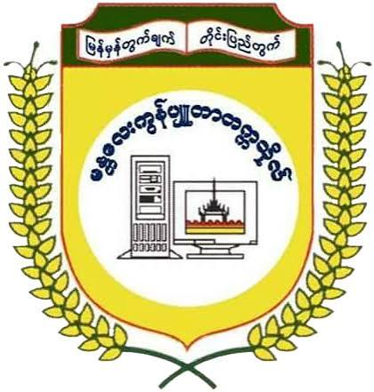
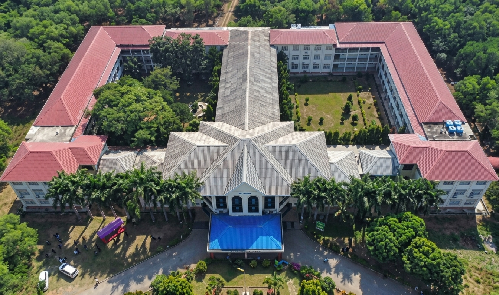
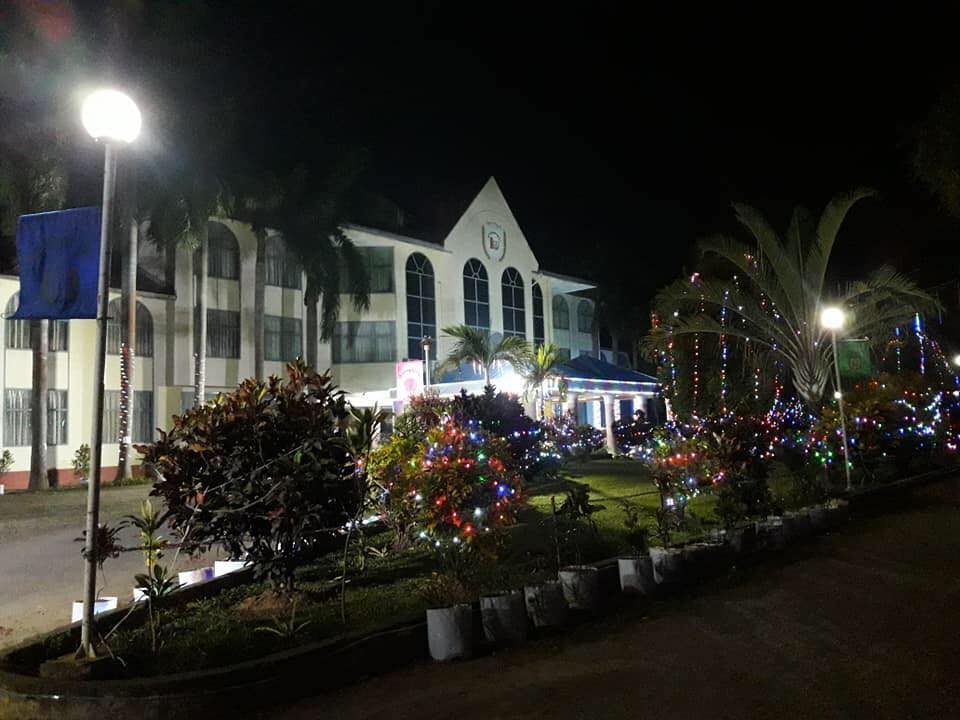
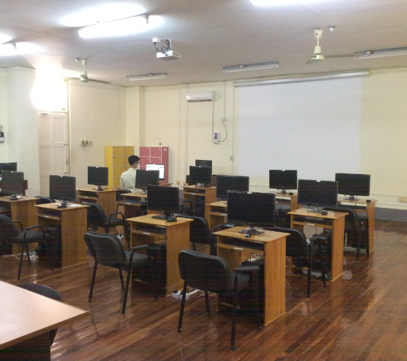
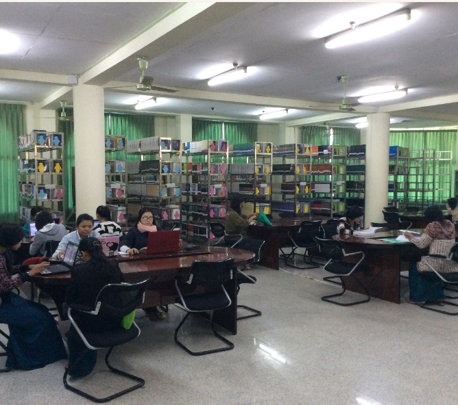

Leading Higher Education Institution in Computer Science & Technology in Upper Myanmar

The University of Computer Studies, Mandalay (UCSM) is one of the premier specialized universities in computing and information technology in upper Myanmar, operating under the Department of Advanced Science and Technology, Ministry of Science and Technology.
UCSM was established on January 1, 1997, as the Institute of Computer Science and Technology (ICST, Mandalay) and was later renamed the University of Computer Studies, Mandalay (UCSM) on September 18, 1997, under the Science and Technology Development Law. UCSM maintains academic and research initiatives aimed at fostering technological innovation, software development, and advanced ICT research across upper Myanmar in accordance with international standards.
Near Yankin Hill, Patheingyi Township, Mandalay Region, Myanmar.
(Subject to Annual Qualification Criteria)



Near Yankin Hill, Patheingyi Township, Mandalay Region, Myanmar